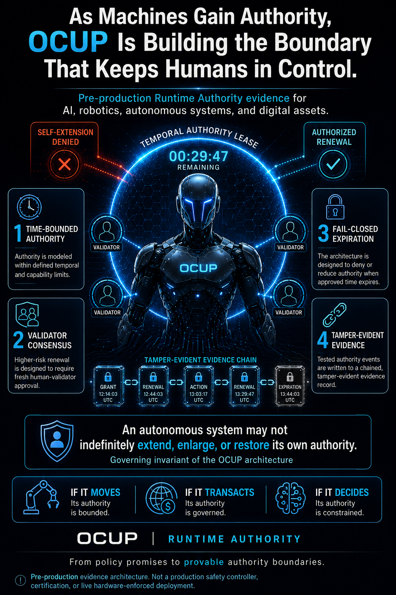

One Chip Unified Protocol
Temporal Authority Governance
for the Autonomous Era
A separable evidence layer that shows what an autonomous system was authorized to do, what it was denied, what expired, and what proof exists afterward.
Local deterministic reference evidence available now. Production deployment is a pilot-stage roadmap, not a shipped claim.
PDF · No registration required
Governing purpose
The infrastructure for a human-governed autonomous era
OCUP isn't another security product. It's an attempt to establish the Temporal Authority Governance infrastructure that increasingly autonomous societies can safely depend on — built through human-AI collaboration, independent verification, and governance architectures future generations can build on and improve.
Early partners aren't only evaluating today's evidence. They're helping shape the authority architecture of tomorrow.
The fuller case for what this looks like at civilization scale — including how it can extend into shared economic opportunity — is laid out at aicomsci.org.
What OCUP is
An authority layer, not an intelligence layer
OCUP — One Chip Unified Protocol — is a runtime authority evidence layer for autonomous systems. It doesn't replace an AI stack, a robotics controller, or a neural-control loop. It sits alongside them and answers a narrower question: was this action authorized, for how long, by whom, and what's the proof?
The mechanism is built on patent-pending temporal leases — bounded, expiring grants of authority — quorum-based approval for high-risk actions, controlled capability step-down as authority narrows, and an append-only audit layer.
Why it matters
Authority needs to be provable, not just intended
As autonomous systems take on higher-stakes actions — financial transactions, physical movement, infrastructure control — the question stops being "is the model good enough" and becomes "what was it actually authorized to do, and can that be proven after the fact."
That question matters to insurers pricing risk, to regulators drafting certification requirements, to fleet operators managing liability, and to any organization that needs an answer more durable than "we trust the model." OCUP's premise: authority should be a verifiable, time-bounded, externally governed property — not a policy the software agrees to follow.
Validation status
Every claim on this page is tied to a zone on the timeline
Green means locally demonstrated, with passing evidence. Amber means designed and in dry run, not yet independently validated. Red means not yet attempted — no hardware, no production claim, no exceptions. The timeline runs head to feet: mission and principle at the top, working evidence in the torso, near-term validation at the hips, and the real-world embodiment frontier at the feet.
Safety case context
The missing runtime layer
Pre-release review assesses capability. OCUP focuses on what happens after deployment: authority expiry, human renewal, privilege gating, and auditable control.

Current evidence
What exists today, described plainly
The OCUP Pilot Portal hosts the current evidence set: an 18-scenario local reference test suite — 7 granted, 11 denied, 18 of 18 assertions passing — sourced from a specific commit in the reference control-plane implementation.
Executable Rust reference implementation. The current pre-production evidence harness and reference control plane are implemented in Rust to support deterministic scenario execution, memory-safe systems development, reproducible testing, and tamper-evident audit generation.
This is local, deterministic reference evidence: a controlled software harness demonstrating the authority logic, not a production distributed system. Rust is the implementation foundation for the present evidence layer; it is not, by itself, a production hardware-enforcement, certification, or safety claim. The current system does not reflect hardware-enforced deployment, live remote validators, or HSM-backed signing. Publication-readiness gating is local only at this stage.
Read the category thesis, benchmark model, industry applications, and paid-pilot pathway. No registration required.
IP & patent status
Two PCT applications, national security review complete
OCUP's core architecture — bounded temporal lease enforcement, quorum-based validator consensus, and the append-only audit layer — is covered by two Patent Cooperation Treaty (PCT) applications, filed to preserve an international priority date across jurisdictions.
Section 181 national security review has been completed, with a foreign filing license granted across three federal agencies, including the Department of Defense. No secrecy order.
A PCT filing establishes an international priority date — it is not a claim of granted patent status in any jurisdiction. Application numbers and filing dates available on request pending publication.
Pilot cohort
90-Day Self-Extension Denial Evidence Pilot
OCUP is opening a 90-day pilot cohort for organizations that want to test the core runtime-authority question directly:
Can an autonomous system preserve, renew, or extend its own authority after its approved runtime boundary expires?
The pilot is structured as an adversarial evidence engagement for robotics companies, insurers, fleet operators, regulators, and standards-adjacent reviewers. Participants define realistic operational scenarios, including lease expiry, attempted self-extension, network loss, stale or replayed authorization, and capability step-down conditions.
OCUP then produces a participant-specific evidence record showing what was authorized, what was denied, what expired, what stepped down, and what proof exists afterward.
Each participant receives a company-specific evidence report plus an anonymized cohort-level benchmark summary at the program’s close. The goal is not to claim a finished production-certified product. The goal is to create a documented technical and commercial record around OCUP’s boldest deliverable:
Proof that an autonomous system cannot preserve, renew, or extend its own authority beyond its approved runtime boundary.
QVN / Partnerships horizon
From local authority evidence to network-verified human governance
OCUP's current evidence layer is local and deterministic by design. The next horizon is QVN — the QSAFP Validator Network — a distributed quorum layer for lease validation, authority continuity, and human-governed reauthorization at fleet scale.
OCUP is seeking technical partners in robotics control, HSM-backed signing, edge attestation, distributed validators, insurance telemetry, and standards-aligned safety evidence.
The mission is simple: local enforcement today, network-verified human authority tomorrow — preserving humanity's seat at the table while enabling safe, scalable autonomous systems.
That validator network, as it matures, is designed to become more than an enforcement layer — a channel through which people, not only corporations, can participate in and hold a durable stake in governing the systems that increasingly act on their behalf. The fuller economic case is laid out at aicomsci.org.
This describes design intent for the validator network's evolution, not a current compensation program or income guarantee.
Safety case discipline
This is what a rigorous safety case looks like, structurally
Emerging frameworks on both sides of the Atlantic are converging on the same evidentiary standard: a safety case built from claims that are stated alongside their supporting arguments and evidence — not general assurances. The U.S. SELF DRIVE Act's safety-case certification requirement and the UN's draft regulation on automated driving systems both anchor on this structure. What follows is OCUP's evidence boundary, built to that standard: an explicit account of what's proven now and what hasn't been attempted yet.
What this page is not claiming
- No robotics hardware has been tested.
- No Optimus, Tesla, or other named hardware platform has been tested.
- No real actuator control system is connected.
- No production enforcement claim is being made.
- No live, distributed validator network exists yet.
- No production HSM (hardware security module) signing exists yet.
- No live Supabase writes exist yet — the pilot portal displays a static evidence export.
- No hosted, authenticated reviewer evidence exists yet.
Everything above is roadmap, not shipped capability. The evidence that does exist is described plainly in Current Evidence, with a source commit reference. Regulatory language above is paraphrased for a general audience — exact statutory wording should be verified before use in any formal filing or SEP submission.
Stay informed
Get critical updates
Material changes to the evidence boundary — new benchmark results, validation status changes, production-path milestones. Sent only when something actually changes.